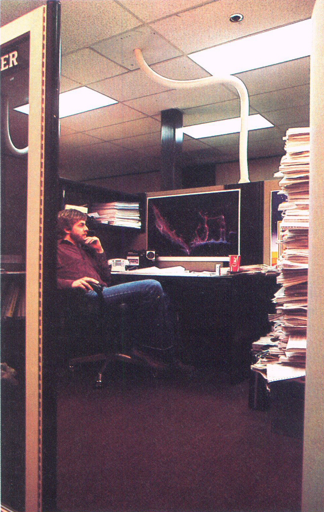
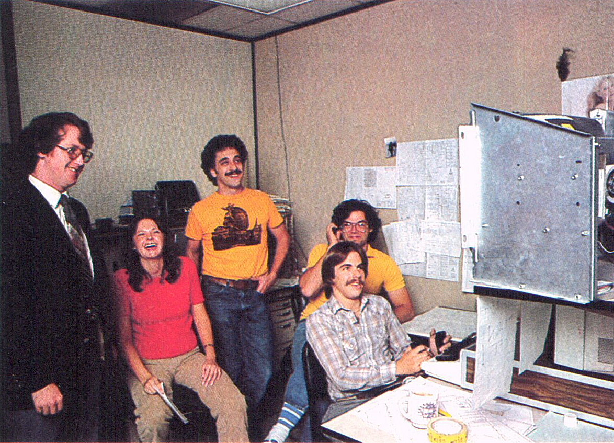

Back
to the previous page
Back
to the previous page  |
the electronic home that will emerge in the
Eighties."
Arcade video games have made Atari a major new player in the entertainment empire known as Warner Communications. A 1980 market research survey by Atari showed that 86 percent of the U.S. population between the ages of 13 and 20 has played some arcade video games, and estimated that Americans are spending $2.5 billion a year on them. They have spread so rapidly that they have taken the culture by surprise Not even the players seem to know quite what to make of them, or why they are so appealing. Kids whose attention span approaches zero in schools spend long hours at apparently repetitive tasks on these machines, improving their skills. The players frequently describe themselves as addicts and junkies. MIT sociologist Sherry Turkic reports that some business executives she has interviewed in the game arcades compare the experience of playing these games to transcendental meditation. Inside the engineering labs and offices at Atari there is a similar air of excitement and inspiration. Everyone here seems to feel that computers are going to play a much friendlier role in our lives than most people ever expected. The image of the large, centralized computers that make impersonal organizations even more impersonal, that insist on their own billing errors and whose superior mentalities seem best suited to writing junk mail, are not the kinds of computers Atarians have in mind. And their perceptions seem to be based on their own experiences. "People aren't going to be able to be scared of computers very much longer," one young games programmer assures me. Dave takes me a short distance down a corridor lined with numbered lab doors. Behind them are the video games of the future, in various stages of development from a few blips and squiggles on video monitors hooked up to rows of printed circuit boards, to advanced mock-ups in cardboard skins, with display panels that blaze into action when anyone hits the start button. Most of the time, someone has. Dave pulls his chair up to a video tube next to a computer, types in a few instructions and begins to play his new game, intently twisting a control knob and hitting the fire button, avoiding electric bolts and zapping monsters, no longer talking to me and unaware of the pack of other programmers and engineers gathering at his back to wait a turn at the game. Some of them haven't had breakfast yet. They are doing what other people are putting millions of coins a day into video-game machines to do in arcades around the world. "I have a terrible time going home some nights and telling my wife that I've The author, on Smithsonian's editorial board, admits as a computer game player he is beaten but unbowed. |
Back
to the previous page
Continue to the next page